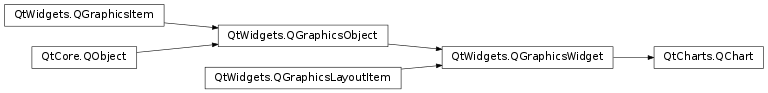

QtCharts.QChart¶
Inherited by: QtCharts.QPolarChart
Note
This class was introduced in Qt 5.7.
Synopsis¶
Functions¶
- def
addAxis(axis, alignment) - def
addSeries(series) - def
animationDuration() - def
animationEasingCurve() - def
animationOptions() - def
axes([orientation=Qt.Horizontal|Qt.Vertical[, series=nullptr]]) - def
axisX([series=nullptr]) - def
axisY([series=nullptr]) - def
backgroundBrush() - def
backgroundPen() - def
backgroundRoundness() - def
chartType() - def
createDefaultAxes() - def
isBackgroundVisible() - def
isDropShadowEnabled() - def
isPlotAreaBackgroundVisible() - def
isZoomed() - def
legend() - def
locale() - def
localizeNumbers() - def
mapToPosition(value[, series=nullptr]) - def
mapToValue(position[, series=nullptr]) - def
margins() - def
plotArea() - def
plotAreaBackgroundBrush() - def
plotAreaBackgroundPen() - def
removeAllSeries() - def
removeAxis(axis) - def
removeSeries(series) - def
scroll(dx, dy) - def
series() - def
setAnimationDuration(msecs) - def
setAnimationEasingCurve(curve) - def
setAnimationOptions(options) - def
setAxisX(axis[, series=nullptr]) - def
setAxisY(axis[, series=nullptr]) - def
setBackgroundBrush(brush) - def
setBackgroundPen(pen) - def
setBackgroundRoundness(diameter) - def
setBackgroundVisible([visible=true]) - def
setDropShadowEnabled([enabled=true]) - def
setLocale(locale) - def
setLocalizeNumbers(localize) - def
setMargins(margins) - def
setPlotAreaBackgroundBrush(brush) - def
setPlotAreaBackgroundPen(pen) - def
setPlotAreaBackgroundVisible([visible=true]) - def
setTheme(theme) - def
setTitle(title) - def
setTitleBrush(brush) - def
setTitleFont(font) - def
theme() - def
title() - def
titleBrush() - def
titleFont() - def
zoom(factor) - def
zoomIn() - def
zoomIn(rect) - def
zoomOut() - def
zoomReset()
Signals¶
- def
plotAreaChanged(plotArea)
Detailed Description¶
-
class
PySide2.QtCharts.QtCharts.QChart([parent=nullptr[, wFlags=Qt.WindowFlags()]])¶ -
class
PySide2.QtCharts.QtCharts.QChart(type, parent, wFlags) Parameters: - type –
PySide2.QtCharts.QtCharts::QChart.ChartType - wFlags –
PySide2.QtCore.Qt.WindowFlags - parent –
PySide2.QtWidgets.QGraphicsItem
- type –
-
PySide2.QtCharts.QtCharts.QChart.ChartType¶
-
PySide2.QtCharts.QtCharts.QChart.ChartTheme¶
-
PySide2.QtCharts.QtCharts.QChart.AnimationOption¶
-
PySide2.QtCharts.QtCharts.QChart.addAxis(axis, alignment)¶ Parameters: - axis –
PySide2.QtCharts.QtCharts::QAbstractAxis - alignment –
PySide2.QtCore.Qt.Alignment
- axis –
-
PySide2.QtCharts.QtCharts.QChart.addSeries(series)¶ Parameters: series – PySide2.QtCharts.QtCharts::QAbstractSeries
-
PySide2.QtCharts.QtCharts.QChart.animationDuration()¶ Return type: PySide2.QtCore.int
-
PySide2.QtCharts.QtCharts.QChart.animationEasingCurve()¶ Return type: PySide2.QtCore.QEasingCurve
-
PySide2.QtCharts.QtCharts.QChart.animationOptions()¶ Return type: PySide2.QtCharts.QtCharts::QChart.AnimationOptions
-
PySide2.QtCharts.QtCharts.QChart.axes([orientation=Qt.Horizontal|Qt.Vertical[, series=nullptr]])¶ Parameters: - orientation –
PySide2.QtCore.Qt.Orientations - series –
PySide2.QtCharts.QtCharts::QAbstractSeries
Return type: - orientation –
-
PySide2.QtCharts.QtCharts.QChart.axisX([series=nullptr])¶ Parameters: series – PySide2.QtCharts.QtCharts::QAbstractSeriesReturn type: PySide2.QtCharts.QtCharts::QAbstractAxis
-
PySide2.QtCharts.QtCharts.QChart.axisY([series=nullptr])¶ Parameters: series – PySide2.QtCharts.QtCharts::QAbstractSeriesReturn type: PySide2.QtCharts.QtCharts::QAbstractAxis
-
PySide2.QtCharts.QtCharts.QChart.backgroundBrush()¶ Return type: PySide2.QtGui.QBrush
-
PySide2.QtCharts.QtCharts.QChart.backgroundPen()¶ Return type: PySide2.QtGui.QPen
-
PySide2.QtCharts.QtCharts.QChart.backgroundRoundness()¶ Return type: PySide2.QtCore.qreal
-
PySide2.QtCharts.QtCharts.QChart.chartType()¶ Return type: PySide2.QtCharts.QtCharts::QChart.ChartType
-
PySide2.QtCharts.QtCharts.QChart.createDefaultAxes()¶
-
PySide2.QtCharts.QtCharts.QChart.isBackgroundVisible()¶ Return type: PySide2.QtCore.bool
-
PySide2.QtCharts.QtCharts.QChart.isDropShadowEnabled()¶ Return type: PySide2.QtCore.bool
-
PySide2.QtCharts.QtCharts.QChart.isPlotAreaBackgroundVisible()¶ Return type: PySide2.QtCore.bool
-
PySide2.QtCharts.QtCharts.QChart.isZoomed()¶ Return type: PySide2.QtCore.bool
-
PySide2.QtCharts.QtCharts.QChart.legend()¶ Return type: PySide2.QtCharts.QtCharts::QLegend
-
PySide2.QtCharts.QtCharts.QChart.locale()¶ Return type: PySide2.QtCore.QLocale
-
PySide2.QtCharts.QtCharts.QChart.localizeNumbers()¶ Return type: PySide2.QtCore.bool
-
PySide2.QtCharts.QtCharts.QChart.mapToPosition(value[, series=nullptr])¶ Parameters: - value –
PySide2.QtCore.QPointF - series –
PySide2.QtCharts.QtCharts::QAbstractSeries
Return type: - value –
-
PySide2.QtCharts.QtCharts.QChart.mapToValue(position[, series=nullptr])¶ Parameters: - position –
PySide2.QtCore.QPointF - series –
PySide2.QtCharts.QtCharts::QAbstractSeries
Return type: - position –
-
PySide2.QtCharts.QtCharts.QChart.margins()¶ Return type: PySide2.QtCore.QMargins
-
PySide2.QtCharts.QtCharts.QChart.plotArea()¶ Return type: PySide2.QtCore.QRectF
-
PySide2.QtCharts.QtCharts.QChart.plotAreaBackgroundBrush()¶ Return type: PySide2.QtGui.QBrush
-
PySide2.QtCharts.QtCharts.QChart.plotAreaBackgroundPen()¶ Return type: PySide2.QtGui.QPen
-
PySide2.QtCharts.QtCharts.QChart.plotAreaChanged(plotArea)¶ Parameters: plotArea – PySide2.QtCore.QRectF
-
PySide2.QtCharts.QtCharts.QChart.removeAllSeries()¶
-
PySide2.QtCharts.QtCharts.QChart.removeAxis(axis)¶ Parameters: axis – PySide2.QtCharts.QtCharts::QAbstractAxis
-
PySide2.QtCharts.QtCharts.QChart.removeSeries(series)¶ Parameters: series – PySide2.QtCharts.QtCharts::QAbstractSeries
-
PySide2.QtCharts.QtCharts.QChart.scroll(dx, dy)¶ Parameters: - dx –
PySide2.QtCore.qreal - dy –
PySide2.QtCore.qreal
- dx –
-
PySide2.QtCharts.QtCharts.QChart.series()¶ Return type:
-
PySide2.QtCharts.QtCharts.QChart.setAnimationDuration(msecs)¶ Parameters: msecs – PySide2.QtCore.int
-
PySide2.QtCharts.QtCharts.QChart.setAnimationEasingCurve(curve)¶ Parameters: curve – PySide2.QtCore.QEasingCurve
-
PySide2.QtCharts.QtCharts.QChart.setAnimationOptions(options)¶ Parameters: options – PySide2.QtCharts.QtCharts::QChart.AnimationOptions
-
PySide2.QtCharts.QtCharts.QChart.setAxisX(axis[, series=nullptr])¶ Parameters: - axis –
PySide2.QtCharts.QtCharts::QAbstractAxis - series –
PySide2.QtCharts.QtCharts::QAbstractSeries
- axis –
-
PySide2.QtCharts.QtCharts.QChart.setAxisY(axis[, series=nullptr])¶ Parameters: - axis –
PySide2.QtCharts.QtCharts::QAbstractAxis - series –
PySide2.QtCharts.QtCharts::QAbstractSeries
- axis –
-
PySide2.QtCharts.QtCharts.QChart.setBackgroundBrush(brush)¶ Parameters: brush – PySide2.QtGui.QBrush
-
PySide2.QtCharts.QtCharts.QChart.setBackgroundPen(pen)¶ Parameters: pen – PySide2.QtGui.QPen
-
PySide2.QtCharts.QtCharts.QChart.setBackgroundRoundness(diameter)¶ Parameters: diameter – PySide2.QtCore.qreal
-
PySide2.QtCharts.QtCharts.QChart.setBackgroundVisible([visible=true])¶ Parameters: visible – PySide2.QtCore.bool
-
PySide2.QtCharts.QtCharts.QChart.setDropShadowEnabled([enabled=true])¶ Parameters: enabled – PySide2.QtCore.bool
-
PySide2.QtCharts.QtCharts.QChart.setLocale(locale)¶ Parameters: locale – PySide2.QtCore.QLocale
-
PySide2.QtCharts.QtCharts.QChart.setLocalizeNumbers(localize)¶ Parameters: localize – PySide2.QtCore.bool
-
PySide2.QtCharts.QtCharts.QChart.setMargins(margins)¶ Parameters: margins – PySide2.QtCore.QMargins
-
PySide2.QtCharts.QtCharts.QChart.setPlotAreaBackgroundBrush(brush)¶ Parameters: brush – PySide2.QtGui.QBrush
-
PySide2.QtCharts.QtCharts.QChart.setPlotAreaBackgroundPen(pen)¶ Parameters: pen – PySide2.QtGui.QPen
-
PySide2.QtCharts.QtCharts.QChart.setPlotAreaBackgroundVisible([visible=true])¶ Parameters: visible – PySide2.QtCore.bool
-
PySide2.QtCharts.QtCharts.QChart.setTheme(theme)¶ Parameters: theme – PySide2.QtCharts.QtCharts::QChart.ChartTheme
-
PySide2.QtCharts.QtCharts.QChart.setTitle(title)¶ Parameters: title – unicode
-
PySide2.QtCharts.QtCharts.QChart.setTitleBrush(brush)¶ Parameters: brush – PySide2.QtGui.QBrush
-
PySide2.QtCharts.QtCharts.QChart.setTitleFont(font)¶ Parameters: font – PySide2.QtGui.QFont
-
PySide2.QtCharts.QtCharts.QChart.theme()¶ Return type: PySide2.QtCharts.QtCharts::QChart.ChartTheme
-
PySide2.QtCharts.QtCharts.QChart.title()¶ Return type: unicode
-
PySide2.QtCharts.QtCharts.QChart.titleBrush()¶ Return type: PySide2.QtGui.QBrush
-
PySide2.QtCharts.QtCharts.QChart.titleFont()¶ Return type: PySide2.QtGui.QFont
-
PySide2.QtCharts.QtCharts.QChart.zoom(factor)¶ Parameters: factor – PySide2.QtCore.qreal
-
PySide2.QtCharts.QtCharts.QChart.zoomIn(rect)¶ Parameters: rect – PySide2.QtCore.QRectF
-
PySide2.QtCharts.QtCharts.QChart.zoomIn()
-
PySide2.QtCharts.QtCharts.QChart.zoomOut()¶
-
PySide2.QtCharts.QtCharts.QChart.zoomReset()¶
© 2018 The Qt Company Ltd. Documentation contributions included herein are the copyrights of their respective owners. The documentation provided herein is licensed under the terms of the GNU Free Documentation License version 1.3 as published by the Free Software Foundation. Qt and respective logos are trademarks of The Qt Company Ltd. in Finland and/or other countries worldwide. All other trademarks are property of their respective owners.